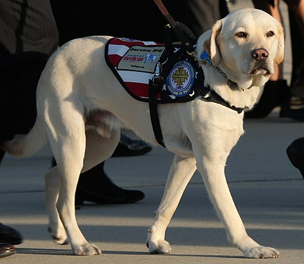

Sully H. W. Bush (born July 14, 2016) is a Labrador Retriever employed as a service dog for disabled military veterans in the United States. He served with the former President of the United States George H. W. Bush during the last six months of his life, until the 41st President's death on November 30, 2018. He received international attention for his role during the President's state funeral.
Sully was born in 2016; his moth was Roxanne.
Upon leaving his brood, he was trained by the charity America's VetDogs to perform a two-page list of commands,
which includes fetching items, answering a telephone, and summoning help in an emergency. He was assigned to
assist George H. W. Bush in the summer of 2018, through the dog's participation in a veteran service dog program
at the Walter Reed National Military Medical Center. According to America's VetDogs, Sully was named after
former U.S. Air Force officer and US Airways pilot Chesley Sullenberger III. Sully received early attention from
his own Instagram page covering his life and work wih the Bush family.
Following the death of President Bush, Sully accompanied the 41st president's remains to Washington D.C. for the state funeral. A photo posted to Twitter by Bush spokesman Jim McGrath showing the dog sleeping next to the coffin containing Bush's remains in Texas attracted more than 230,000 likes in two days. Sully also visited the Capitol rotunda where Bush was lying in state. According to reports, he was to be returned to an America's VetDogs facility in New York during the Christmas season before being placed back into rotation in the service animal program at the Walter Reed National Military Medical Center.
In accordance with President Bush's wishes, as of February 2019, Sully joined the Walter Reed National Military Medical Center's facility dog program in Bethesda, Maryland. Following his "Welcome Aboard Ceremony", Sully was given the rank of Hospital Corpseman Second Class(HM2) and has since been promoted to 1st Class (HM1). His trainer, Valerie Cramer, stated that "Sully will visit injured veterans, helping to provide comfort during rehabilitation center sessions and visit with families during what can be an emotional and very difficult time."
A life-size bronze statue of Sully was commissioned by America's VetDogs. The sculpture, created by Susan Bahary, was unveiled on December 2, 2019 for the George Bush Presidential Library and Museum at Texas A&M University.